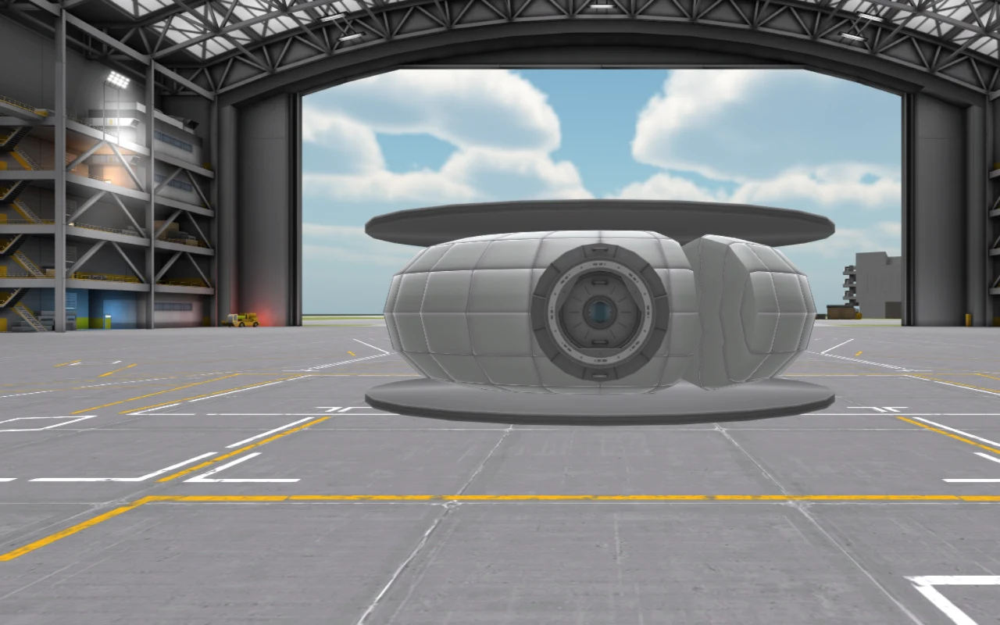

ShineFix home
← Back to supported mods
G.R.A.P.E.F.R.U.I.T.
Optics verified
Human tested
Version 0.4.2
Compatibility evidence
Original screenshot gallery
Parts
MH-S4 hotizontal dock
MHL-S4 "Mir-III" Spacecraft Docking Module
SSE-S4 ring dock
